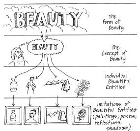

DAVID HUME (1711-1776)
I.
INTRODUCTION
According to David Hume, neither Locke nor Berkeley
were willing to rest their theories of knowledge on the premises they suggest.
Each smuggled in ideas of “common sense” which they were not willing to give
up.[42]
Hume set out, much like Locke and Berkeley, to
provide a “mental geography” of the mind—a delineation of the distinctive parts
and powers of the mind.[43]
He desired to be the “
In the introduction to his Treatise on Human Nature, Hume indicates why epistemology is at the
centre of modern philosophy: “It is evident, that all the sciences have a
relation, greater or less, to human nature; and that, however wide any of them
may seem to run from it, they still return back by one passage or another. Even
Mathematics, Natural Philosophy, and Natural Religion, are in some measure
dependent on the science of MAN; since they lie under the cognisance of men,
and are judged of by their powers and faculties.”[45]
II.
HUME’S
THEORY OF KNOWLEDGE
A.
The
Elements of Cognition
Hume rejected Locke’s distinction between ideas of
sensation and ideas of reflection. He proposed, rather, a distinction between
what he called “impressions” and “ideas.”
|
???
® Perceptions ®® |
Simple Impressions (sights, sounds) |
¬¬¬¬¬¬¬¬¬¬¬¬¬ |
|
|
¯¯¯ |
|
|
|
Simple Ideas ®® |
¬¬¬Reflection on®® (hate, guilt, pride) |
“Every simple idea has a simple impression, which
resembles it; and every simple impression, a correspondent idea.”[46]
The two kinds
of perceptions:
1.
Impressions = more lively, forceful,
temporally prior, with underived originality
2.
Ideas = ”feeble” images of
prior impressions. These ideas, in turn, give rise to ideas of imagination and
memory
These two types of perceptions are distinguished,
not by their origin or cause (of which we can know little), but by their
forcefulness, liveliness, or vivacity. This distinction allows Hume to
differentiate between ideas (copies) and impressions on strictly observable
criteria, i.e., liveliness, vivacity, etc., rather than by origin.
Hume refuses to speculate on the origin of
impressions and what accounts for the differences in their vivacity. [cf.
“[W]e cannot go beyond experience; and any
hypothesis that pretends to discover the ultimate original qualities of human
nature, ought at first . . . to be rejected as presumptuous and chimerical. . .
. As long as we confine our speculations to the appearances of objects to our sense, without entering into
disquisitions concerning their real nature and operations, we are safe from all
difficulties.”[47]
B.
Imagination
and the Association of Ideas
All simple impressions
are self-contained, atomic units which are separate from each other.
Impressions and their subsequent ideas are independent entities (psychological
atomism). “[E]verything in nature is individual.“[48]
“Since our simple ideas
are loose and unconnected they provide imagination with plastic materials for
its own synthetic [putting together] operations.”[49]
The imagination dips
into the stream of simple ideas and recombines them with other ideas.
“The gentle
force of association inclines the imagination to make connections which . .
. are often uniform and enduring, so that one idea naturally tends to introduce
another in the mind. What the precise nature of this mental principle of
association may be, Hume professes to remain ignorant.”[50]
“He [Hume] stated that he had discovered in the
psychological principle of ‘association’ a ‘kind of ATTRACTION, which in the
mental world will be found to have as extraordinary effects as in the natural,
and to shew itself in as many and as various forms’.”[51]
The mind’s associative habit reveals itself in
three practices of mental operation: (1) resemblance; (2) contiguity in time or
place; and (3) cause and effect.
These associative habits of the mind provide a
“cement” to the otherwise loose atoms of impressions and ideas. What we experience
has already been processed by these associative habits; it gives itself out in
terms of associated wholes and a connected series of images rather than as an
antic dance of detached impressions and ideas.
III.
CAUSATION
A.
No
Necessary Connection Between Cause and Effect
Prior to Hume there was widespread agreement that every
event has a cause that necessarily produces it.[52]
Hume investigated this so-called “necessary connection” between cause and
effect.
He determined that a priori reasoning could not identify any necessary connection between a cause and its so-called effect.
Without experience, it is impossible to predict what effect any purported cause
may have. Given any “cause” the fact that its alleged “effect” does not occur
is never logically contradictory. Effects cannot be rationally deduced from causes.
It is always appropriate to ask, “Given the occurrence of ‘x’ (cause) did ‘y’
(effect) occur?
After having satisfied himself that no logical or necessary connection exists between any two events, Hume explores
the psychological connection by which
the mind associates events. How does the mind pass from one event (the “cause”)
to another (the “effect”)?
Hume could only find three impressions that seemed
to be associated with what is commonly called “cause and effect.”
1.
contiguity—two impressions appear close together in space
2.
priority in time—one impression always precedes the
other
3.
frequent conjunction—two impressions typically appear
together
In keeping with what he claimed previously [section
II.B in our notes], Hume argues that we can never observe any connection between impressions, let alone a necessary connection. All events are
entirely loose and separate. They are only customarily unified as the
imagination moves under the force of a habit towards a settled belief.
No “instance of the operations of bodies” can yield
a single impression of the power
between two events (Locke had defined cause as a power which leads from the
cause to the effect). “The leap from factual conjunction to
necessary-connection-in-virtue-of-a-causal-power is made by the mind, acting
involuntarily under the force of habitual association.”[53]
Describing certain events as either “cause” or ‘effect”
is unintelligible according to the empirical criterion of meaning [Hume
basically follows
B.
Where
Does The Confused Idea of Causation Originate?
“Thus, the whole experiential origin of this
supposedly profound idea that there is a necessary connection between cause and
effect amounts to no more than (1) a repeated sequence of impressions and (2)
the expectation that on its next occurrence, the first impression of the
sequence will again be followed by the second.”[54]
“Our idea of necessary connection is derived from
something in us, not in the object. . . . it is grounded in the human
imagination, not in the rationality of the universe.”[55]
What does this do to the experimental science of
A “causal connection” is only a movement of the
mind for psychological reasons, a feeling, if you will, of connectedness. When
we report a causal relation we are simply reporting what we have come to
expect.
IV.
METAPHYSICS:
THE EXTERNAL WORLD AND THE SELF
Hume’s critique of metaphysics does not argue
against the reality of the external
world or the self, but only against claims that we have knowledge of them.
A.
Bodies
in the External World
Hume didn’t doubt the existence of a world outside
of man—it just could not be demonstrably justified. Hence he is properly called
an epistemological sceptic. The mind is only aware of its perceptions—it cannot
experience the relation between these perceptions and any “outside” reality. Perceptions
cannot and should not operate beyond “the extent in which they really operate.”[56]
Why do we believe in an
external world?
The notions of externality and independence are
produced by the faculty of imagination which makes several almost imperceptible
“leaps” between impressions.
1.
The constancy of regularly repeating impressions induces the
imagination to pass beyond these individual datum to a belief in the continued
existence of a bodily counterpart.
2.
Additionally, the coherence or
patterning of certain data sets causes the imagination to “fill in” the
intervals and thereby suppose that there is something invisible underpinning
them.
The grounds for belief in the
external world are not logical or even experiential, but rather, psychological.
B.
The
Self
Most philosophers (especially the Cartesian rationalists)
held that we are conscious of a self and its continuation in existence.
Hume asks, “From which simple impression could the
idea of an enduring self be derived?”
It is impossible to
experience anything like a self extended through time since every impression
which could give rise to this idea is itself singular and not extended through
time. Therefore, memory and imagination must fabricate the idea of a self as
the persistent subject of ongoing perceptions. We do experience sequential
mental operations at work within us; we do not, however, experience mind or
self.
For Hume, the mind is
“nothing but a bundle or collection of different perceptions, which succeed
each other with incredible rapidity and perpetual movement . . . The mind is a
kind of theatre, where several perceptions successively make their appearance;
pass, re-pass, glide away, and mingle in a infinite variety of postures and
situations.”[57]
Hume warns us not to think
that the mind is a theatre—with a
definitive place, a stage, etc.—it simply is the stream of successive
perceptions and operations.
V.
SELECTED
PROBLEMS
“It is as if, at the high noon of the
Enlightenment, at the hour of the siesta when everything seems so quiet and
secure all about, one were suddenly aware of a short, sharp slipping of the
foundations, a faint far-off tremor running underneath the solid ground of
common sense.”[58]
A.
Can thinking be distinguished from
psychological association? Is logic itself subject to the empirical criterion
of meaning?
B.
What is to become of an experimental
science without a concept of causation free from the operations of the
imagination? Similarly, what is to become of metaphysics without a concept of
causation, self, or God, and no known referent beyond simple and individual
impressions?
IMMANUEL KANT (1724-1804)
I.
THE
SHAPE OF KANT’S PROBLEM
According to the Continental Rationalists
[Descartes’ followers]: (1) “clear rational principles . . . could be organized
into a system of truths from which accurate information about the world could
be deduced; and (2) the mind . . . is structured in such a way that simply by
operating according to the appropriate method it can discover the nature of the
universe.”[59]
The problem with
Continental Rationalism:
It was based on a geometric model and the analytic relation of ideas to each other. After Hume, many
rationalist concepts—e.g., God, time, space, self—no longer seemed necessary or
even warranted by experience. The relation between the mind’s operations and the
world was undermined by Hume’s account of the mind’s habitual processes.
The problem with British
Empiricism: Hume’s
striking arguments against causality, self, and metaphysics strengthened the
notion that we can only know our own ideas. Empiricism seemed unable to find
any necessary ground for knowledge.
Neither Continental Rationalism nor British
Empiricism could adequately account for the obvious gains of experimental
science.
“Thus, in a curious way, by following very
different paths, both the rationalists and the empiricists reached the same
skeptical dead end: The former were confined to tracing out implicatory relations
among ideas; the latter, to recording relations of coexistence and succession
among ideas.”[60]
II.
AN
ILLUSTRATION OF KANT’S NOVEL HYPOTHESIS[61]
How is it possible to know a priori, that is, before turning on the television tonight, that Ben
Mulroney’s shirt will exhibit various shades of grey?
III.
KANT’S
NOVEL HYPOTHESIS
Kant’s starting point was an analysis of the powers
of human reasoning: “What and how much
can reason know, apart from all experience?” The failure of realist
hypotheses (which assumed that knowledge must conform to its objects) led Kant
to propose a new hypothesis, namely, that objects must conform to our knowing
capacities. He proposed that we possess mental faculties which bring experience
into conformity with a priori (i.e., universal
and necessary) mental structures?
“The fundamental thrust of Kant’s self-styled
Copernican Revolution is that the things in the world owe their basic structure
. . . to the noetic activity of our minds.”[62]
“According to his hypothesis, knowledge is a
cooperative affair in which both mind and object make a contribution, and mind
contributes the relations while objects contribute the relata.”[63]
“Kant’s hypothesis . . . was that
certain standard forms are contributed by the mind, in terms of which the
content of experience is organized. These standard forms ‘sort’ the content of
experience into standard patterns. Though the materials that are thus organized
into patterns are not necessary, the
patterns themselves are necessary, for without them the variable contents
would only be a chaotic jumble, not the well-ordered content we actually
experience.”[64]
Space and time are necessary (because they are a priori) forms through which the mind
experiences the world; they are ways in which it receives the world on its own
terms.
Hume’s associative habits of the mind are not just
psychological habits but logically necessary: they are necessary conditions for
the very possibility of experience.
Even within Hume’s “stream of perceptions” space
and time are presupposed as necessary conditions since we can only experience
impressions as spatially and temporally related. Even Hume’s devastating analysis
of cause and effect explicitly relies on categories of space and time—i.e.,
“proximity” and “priority in time.” For instance, the judgment, “The cat is on
the mat” presupposes “all objects exist in space and time.” This latter claim
cannot be justified by any appeal to experience, but only by an appeal to its
status as a necessary condition of all experience.
“[T]he forms of space and time are the conditions
under which we are capable of having experience at all—we can only
undergo sensations (either perceived or imaginary) that are arranged in space,
and spread out in time; anything else is just impossible for us.”[65]
|
|
Analytic |
Synthetic |
|
A priori |
“Husbands are married males.” |
“Every
change has a cause” “1245
+ 1589 = 2834” |
|
A
posteriori |
Null |
“This husband is tall” |
“But though all our
knowledge begins with experience, it does not follow that it all arises out of
experience.” [66]
“[I]t sounds strange at first, but it is none the
less true when I say in respect of these laws of the intellect: The intellect does not derive its Laws from
nature but prescribes them to nature.”[67]
IV.
A
TRANSCENDENTAL ANALYSIS OF JUDGMENT
Kant called his method of analysis a
“transcendental deduction” because it “transcends” direct observation; it gets
beneath experience and understanding to the necessary conditions which underlie
them.
Human experience is organized according to certain
universal forms, e.g., A causes B, or A is B. “[D]espite Hume’s attack, there
does exist a ‘necessary connection’ among matters of fact—not a necessary
connection between this particular fact A and that particular fact B but a
necessary connection, or structure, that organizes experience into an ‘A-is-B’
type.”[68]
E.g., “All crows are black” contains an empirical
component which is only available through experience. It also invokes the form
“All _______ are _______.” This structure
is a priori, antecedent to all
experience and a necessary condition of there being “empirical” knowledge of
this sort.
Every judgment of the mind presupposes one of the
following different synthetical operations or what Kant, following Aristotle,
calls categories.
|
QUANTITY UNIVERSAL: All A is B PARTICULAR: Some A is B SINGULAR: This A is B |
QUALITY AFFIRMATIVE: A is B NEGATIVE: A is not B INFINITE: A is non B |
|
RELATION CATEGORICAL: A is B HYPOTHETICAL: If A then B DISJUNCTIVE: Either A or B |
MODALITY PROBLEMATIC: A may be B ASSERTORIC: A is B APODEICTIC: A must be B |
These categories are transcendental in that they underlie all empirical syntheses and
are not derived from experience itself.
V.
CONCLUDING
REMARKS
“The root of the trouble was not empiricism; it was
the assumption that only what is given in sensation is real. In Kant’s view,
the starting point of a true empiricism must be the empirical fact that men
experience connections between matters of fact, for example, ‘objects.’ Since
the connections are real, the conditions that make them possible must also be
real, even though they are not themselves encountered, or verified, in
experience.”[69]
A direct implication of Kant’s account of the
operations of the mind is that the world-in-itself is not available for direct
inspection. Kant calls the world as experienced (sense data + the operations of
the mind) the phenomenal world. The world as it is in itself, apart from the
operations of the mind, is inaccessible. For Kant, this noumenal world exists, is related to the phenomenal world, and reminds us of the
limits of our knowledge.
“[
VI.
IMPLICATIONS
FOR SUBSEQUENT THOUGHT
·
The
mind is the constructor/synthesizer of all knowledge.
·
Later
thinkers will dispute the universality/immutability of the a priori categories.
·
Kant
heralded the turn towards anthropology in theology and the emergence of the
historical study of religion. Persons are now seen as ordering their religious
world in terms of what they bring to the quest.
·
Religious
language will now come to be understood in functional terms and not in terms of
its external referent.
·
Metaphysics
(the realm of the noumenon) is now effectively isolated from the realm of
knowledge and it will be abandoned by many thinkers after Kant.
·
The
Enlightenment belief that the world with its natural laws was rational and that
man could align himself via reason with those basic principles is now mortally
wounded. Reason itself is the source of all necessity and not the world.
·
The
rise of pragmatism—the view that knowledge is characterized by the agenda of
the agent deploying it. The mind has become a productive organ. Reality is
constructed, not perceived or discovered.[71]
PHILOSOPHY OF SCIENCE
I.
INDUCTION,
CONFIRMATION, AND INVENTION[72]
A.
Can
Induction Be Rationally Justified?[73]
Can our belief in the uniformity of nature be
rendered as a general law for which there are no possible exceptions?
“The only
reason for believing that the laws of motion will remain in operation is that
they have operated hitherto, so far as our knowledge of the past enables us to
judge” (659).
“[I]nduction is not based on anything which can be
observed as inherent in nature. . . . the order of nature cannot be justified
by the mere observation of nature. For there is nothing in the present fact
which inherently refers either to the past or to the future.”[74]
We must distinguish between the fact that past
uniformities cause expectations of
the future (cf. Hume’s mental associations) and how such expectations may be justified.
“[T]he fact that two things have been found often
together and never apart does not, by itself, suffice to prove demonstrably that they will be found together in the next
case we examine” (661).
B.
Can Hypotheses Be Decisively Confirmed?
In Carl Hempel’s view, a given scientific hypothesis can be decisively
rejected (discomfirmed) if its “test implications” do not hold.
However, if a test implication of a given hypothesis comes to pass, it
does not follow that the hypothesis has been confirmed. Even if an hypothesis
is seemingly verified by a set of tests, it is always possible that a broader
hypothesis actually accounts for the success of this hypothesis. Note, for
instance, the progression in the hypotheses accounting for childbed fever that
moved from “cadaveric matter” to “putrid matter derived from living organisms”
to even more recent hypotheses about bacterial infection. All of these different
hypotheses are simultaneously “confirmed” by Semmelweis’ original findings.
Therefore, his confirmatory tests do not give exclusive or decisive support to
his original (cadaveric matter) hypothesis.
Discussion of modus tollens
and the fallacy of affirming the consequent.
At best, confirmatory results only provide a provisional or partial corroboration
of the hypothesis.
C.
Hempel’s Critique of Narrow (Textbook)
Inductivism
Hempel argues that “the narrow inductivist conception” is committed to
four stages of scientific inquiry: (1) observation and recording of all facts;
(2) analysis and classification of these facts; (3) inductive derivation of
generalizations from them; and (4) further testing of the generalizations
(320).
He finds this standard account untenable for the following reasons:
1.
Scientific
investigation could not even begin if its facts had to be collected without the
aid of one or more working hypotheses.
Scientific investigators must have some answer in mind to the problem before
them if they are to determine which facts are relevant to the problem.
“Empirical ‘facts’ or findings, therefore, can be qualified as
logically relevant or irrelevant only in reference to a given hypothesis”
(320).
“[T]entative hypotheses are needed to give direction to a scientific
investigation” (321).
2.
Analysis
and classification can only lead to an explanation of the phenomena if
hypotheses are assumed.
Since working hypotheses are necessary, it is impossible that analysis,
classification, and generalization about the phenomena under consideration only
arise at stage (3).
3.
Hypotheses
are not derived directly from the phenomena under consideration.
Most hypotheses contain explanatory terms that do not arise from the
data but are invented in order to help account for or explain the data, e.g.,
atom, electron, force, etc. These novel explanations cannot be derived
methodically or mechanically from data alone.
4.
The
transition from data to theory requires creative imagination.
“Scientific hypotheses and theories are not derived from observed facts, but invented in order to account for them. They constitute guesses at
the connections that might obtain between the phenomena under study, at
uniformities and patterns that might underlie their occurrence” (322).
“[S]cientific objectivity is safe-guarded by the principle that while
hypotheses and theories may be freely invented and proposed in science, they can be accepted into the body of scientific knowledge only if they pass
critical scrutiny” (323).
II.
CONJECTURES
AND REFUTATIONS[75]
A.
The
Problem of Demarcating Scientific Theories
The young Karl Popper concluded that many powerful
theories could account for every conceivable case in their domain, e.g.,
psychoanalysis, astrology. From the perspective of an accepted theory, the
world is full of verifications.
How then can
scientific theories, which may in the end be false and still be good scientific
theories (e.g.,
Popper
eventually concluded that only scientific theories offer “risky” predictions
which threaten to decisively falsify the theory. In other words, a good
scientific theory “forbids” some specific states of affairs from being the
case. Astrology and psychoanalysis, on the other hand, forbid nothing.
According to
Popper, even though scientific theories cannot be decisively confirmed (cf.
Hempel), they can be decisively disproved or falsified.
“The criterion
of the scientific status of a theory is its falsifiability, or refutability, or
testability” (333).
B.
The
Traditional Inductivist Account of the Scientific Method
1. Science begins with observations
2.
Regularities
appear in the data
3.
Explanatory
hypotheses are suggested and tested
4.
Eventually
an hypothesis is verified by confirmatory cases
Contrary to this
view, observations are only relevant or irrelevant to a given hypothesis and a
specific problem. Tentative or working hypotheses are needed to even begin observation.[76]
C.
Popper’s
Non-Inductivist Theory of Scientific Method
Popper accepts Hume’s criticism of inductivism,
that is, that general scientific laws cannot be deduced or induced from the
observation of past regularities. Popper concludes that verification of any
scientific theory is technically impossible. Any number of cases, e.g., the
trillions of confirmations of Newtonian mechanics, cannot demonstrate that the
theory is true. Competing and more-encompassing theories cannot be eliminated
by any number of confirmatory cases. Any group of facts is subsumable under
more than one theory.
Technically,
theories cannot be decisively falsified by disconfirming cases either; they can
be “rescued” by introducing “ad hoc [“for the particular situation or
case at hand and for no other”] auxiliary assumptions (333).
Popper
concludes that if we don’t and can’t induce general laws from particular cases,
perhaps induction plays no role in science (or common experience, for that
matter).
“Without
waiting, passively, for repetitions to impress or impose regularities upon us,
we actively try to impose regularities upon the world. We try to discover
similarities in it, and to interpret it in terms of laws invented by us. Without
waiting for premises we jump to conclusions. These may have to be discarded
later, should observation show that they are wrong” (341).
For Popper, scientists
proceed by the “method” of trial and error (conjectures and refutations) rather
than induction (observations leading to confirmed theories). Popper notes that
we can only notice “similarities” in our observations if we have previously
“forced interpretations on the world” (341). Scientific theories are invented
and only eliminated if they clash with observations (342).
“There are,
then, no generally applicable ‘rules of induction’, by which hypotheses or
theories can be mechanically derived or inferred from empirical data. The
transition from data to theory requires creative imagination. Scientific
hypotheses or theories are not derived from observed facts, but invented
in order to account for them.”[77]
“[F]or the
scientist . . . his theoretical interests, the special problem under
investigation, his conjectures and anticipations, and the theories which he
accepts as a kind of background [provide] his frame of reference, his ‘horizon
of expectations’” (342).
“Thus science
must begin with myths, and with the criticism of myths; neither with the
collection of observations, nor with the invention of experiments, but with the
critical discussion of myths, and of magical techniques and practices (cf.
“[T]here is
no more rational procedure than the method of trial and error—of conjecture and
refutation: of boldly proposing theories; of trying our best to show that
these are erroneous; and of accepting them tentatively if our critical efforts
are unsuccessful” (346).
1.
“Induction,
i.e., inference based on many observations, is a myth. It is neither a
psychological fact, nor a fact of ordinary life, nor one of scientific
procedure.
2.
The
actual procedure of science is to operate with conjectures: to jump to
conclusions—often after a single observation.
3.
Repeated
observations and experiments function in science as tests of our conjectures or hypotheses, i.e.,
as attempted refutations” (347).
“So long as a
theory stands up to the severest tests we can design, it is accepted; if it
does not, it is rejected. But it is never inferred, in any sense, from the
empirical evidence. . . . Only the falsity of the theory can be inferred
from empirical evidence.“ (348).
III.
OBJECTIVITY,
JUDGMENT, AND THEORY CHOICE
A.
The Structure of Scientific Revolutions
In his famous
treatise, The Structure of Scientific Revolutions, Thomas Kuhn [1922-96]
argued that everyday or normal science operates within a set of unquestioned
theoretical assumptions, or paradigms. Paradigms are “universally recognized
scientific achievements that for a time provide model problems and solutions to
a community of practitioners.”[78]
Only rarely are
these paradigms questioned since the internal social structure and educational
processes of “normal science” reinforce them. Research findings that challenge
the dominant paradigm are often ignored until a crucial stage is reached when
the pressures become so great that the anomalies cannot be ignored any longer
and a paradigm shift or revolution occurs.
This shift or
“conversion experience” to another incompatible paradigm is not made one step
at a time nor is it forced by logic or simple experience. “Like a gestalt
switch, it must occur all at once (though not necessarily in an instant) or not
at all.”[79]
“Perhaps
science does not develop by the accumulation of individual discoveries and
inventions.”[80]
Kuhn claims that the linear, progressive model of science is fabricated by
textbook presentations of the history of science.
One of Kuhn’s
most controversial claims is that there are no strictly rational decision-making
procedures (algorithms) for determining which paradigm to adopt. Kuhn called
this “the insufficiency of methodological directives, by themselves, to dictate
a unique substantive conclusion.”[81]
This means that the distinction between the context of discovery and the
context of justification [Popper, Hempel, et al.] collapses. Both scientific
discovery and justification rely on
subjective elements.
There is “[a]n
apparently arbitrary element, compounded of personal and historical accident”
that is always a formative ingredient in the beliefs espoused by a given
scientific community.”[82]
The criteria by which scientists decide on paradigms are infused with partly
subjective elements.
Not only is
there no purely objective method by which one can rationally prefer one
paradigm to another, there is a fundamental incommensurability between
paradigms such that those who subscribe to one literally speak a different
language with different meanings than their counterparts who subscribe to
another paradigm.
B.
Subjectivity
and Theory [Paradigm] Choice[83]
Kuhn concurs
with the consensus view that the following five criteria are characteristic of
good scientific theories: (1) they should be accurate; (2) they should be
internally and externally consistent; (3) they should have broad scope; (4)
they should be simple; (5) they should be fruitful and produce new research
findings.[84]
These criteria,
however, are imprecise and for that reason there can be legitimate disagreement
about how they are to be applied to concrete cases.
Further, these
criteria can conflict with each other when deployed as a complete set. For
instance, one theory may be better than its rival on one criterion but weaker
on another. These criteria do not specify how they are to be applied in a given
instance nor how each is to be weighted against the others if they yield
contrary judgements.
Although these
criteria are indispensable, “they are not by themselves sufficient to determine
the decisions of individual scientists.”[85]
The choice of a
scientific theory—in a period where viable alternatives are available—depends
somewhat on subjective factors related to the experiences, social standing, and
intellectual climate that surrounds the scientist. These factors play an
irremovable role in theory choice. Later in the essay, Kuhn suggests that these
criteria of theory choice “function not as rules, which determine choice, but
as values, which influence it.”[86]
C.
Recent
Developments in the Epistemology of Science[87]
1.
There is now much more detailed study of the history [and
sociology] of science (10).
2.
There is no clear, simple relation between the results of
experiments or observations and scientific theories
(147). Even
“contradictory” observations are not straightforward falsifications; they can
be taken as research problems. “The decision as to how a discrepancy between
theory and observation is to be handled requires a judgment by scientists”
(147).
3.
Rationality is no longer identified with universal
algorithms which generate theories from observations but with a willingness to
admit all relevant factors, including exceptional and conflicting cases, as
fodder for the practical wisdom of the experienced scientist (148-49).
4.
“[T]he ultimate decision on scientific questions rests with
the scientific community, rather than an impersonal testing procedure” (154).
5.
Since neither science nor any formal algorithmic procedure
can be thoroughly “objective,” that is, free of human characteristics,
subjectivity itself cannot be defective or deficient.
METAPHYSICS
I.
FORM-MATTER
DUALISM—PLATO
A.
The
Monism of the Early Greek Philosophers
The question which launched the ancient Greek
philosophical enterprise is: “What is the one out of which everything comes?”
How can the “oneness” of this basic reality be reconciled with the change/flux
that we see all around us? How can a multitude of different appearances
(pluralities) be reconciled with the one? Prior to Socrates/Plato, philosophers
theorized about the unchangeable One and the changing Many in the following
ways:
1.
There
is nothing but flux or change. (Heraclitus)
2.
Change
is impossible; our senses mislead us. (Parmenides)
3.
Reality
= unchanging “a-toms” which are continually rearranged. (Democritus)
4.
In
light of this plurality of views, reason itself is suspect and can only serve
private interests. (Sophists)
B.
Plato’s
Theory of the Two Realms
Plato concluded that Heraclitus, Parmenides, and
Democritus were all correct. Their ideas, however, applied to fundamentally
distinct realms. The contradiction
between these theories is removed when they are taken as referring to different
things.
“Beyond the world of physical objects in space and
time, but standing in intimate relation to it, is another world—nonphysical,
nonspatial, nontemporal.”[88]
C.
The
Forms
Our English word ‘idea’ implies a mind in which it
exists. The term which Plato used, ideai,
did not. Plato’s realm of the “Forms” is independent of any perceiving mind,
although it is uniquely suited to mental apperception. The Forms, or real
essences, are not derived from sense perception. They are known only in
thought.
E.g., Triangle: Its essential properties cannot be known in experience. What ontological (being) status does this mathematical figure possess?
For Plato, triangles can only be similar to the Form, or “real essence”
of a Triangle. This or that particular triangle “participates” in the Form of
the Triangle, which is only known in data-less thought.
Whenever we think, we are thinking about or with these
Forms. Nothing other than eternal, unchanging Forms can qualify as objects of true
knowledge.
1.
The
Divided Line (from the Republic)[89]
Notice the theories of ontology (being),
epistemology (knowledge), ethics (morals) and aesthetics (beauty).
“Anything which makes something else intelligible
is ‘higher’. That which is illuminated is ‘lower’. Since he [Plato] also held
that it is the abstract and general that illuminates the particular, he thought
of forms as ‘higher’ and physical objects as ‘lower’.” [90]


2.
The
Form of the Good
The Form of the Good stands at the apex of the
pyramid of knowledge or reality. It gives truth, being, and reality to the
objects of knowledge just as the sun gives physical objects their
perceptibility.
The perception of this Form comes in the following
way: (1) Our souls had direct perception of it prior to our birth; (2) We are
able to recall its features via dialectical progress “up” the scale of
knowledge/being.
Similes, myths, examples (means of causing
recollection) are the best ways for coming to understand the Form of the Good.
3.
 The Allegory
of the Cave
The Allegory
of the Cave
Movement from cave-shadows® actors, artifacts, fire® out of the cave® shadows of trees® trees® sun.
The realms of being and value coincide. The more
being something has, the more beautiful it is, the more it is knowable.
True education is the process of turning the head
of the learner away from the shadows of the cave toward the true light of the
sun. Those who have been out of the cave have a duty to return to those who may
violently resist any challenge to their ignorance.
Forms are objective (versus the Sophists).
They are public and knowable.
II.
KANT’S
CRITIQUE OF METAPHYSICS
A.
Critique
of the Central Concepts of Rationalistic Metaphysics
Kant proposed to show that each of the three main
concepts of rationalistic metaphysics—self, God, and being-in-general—illegitimately
applied the categories (which apply only to experience) to these “things-in-themselves.”
1.
The
Self: The Transcendental Unity of Experience
For Kant, rationalist arguments regarding the self
overlooked the distinction between the empirical self (which, like all
experienced entities, was subject to the categories) and the transcendental Self—a
set of a priori, synthetical
operations that make experience possible. These operations cannot be directly experienced;
rather, they are unifying functions implied within all experience.
a)
All
experience is a succession of a variety of contents. (Hume)
b)
However,
to be experienced at all, these successive data have to be combined, or brought
together or unified within a single consciousness. Experience, by its very nature,
is a unified and trans-temporal synthesis of various faculties: sensation,
imagination, memory, anticipation.
c)
This
synthesizing process which makes unified experience possible implies an active
unifier = the transcendental (but unexperienced) Self.[91]
The unity of experience does not issue from the
unity of the external world. Kant recognizes that the operations of the Self
provide the basis for the unity of experience. All of our synthesized
experiences have their unity in a single, enduring Self, what Kant calls the
‘transcendental unity of apperception.’ The Self, as an a priori
synthesizing process, is the necessary ground for the unity of experience.
2.
God
According to Kant, there are only three possible
ways of using speculative reason to prove God’s existence: the ontological argument, the cosmological argument, and the teleological argument. If these arguments are invalid, rationalistic
theology is impossible. (We will only discuss the first two arguments, since
Kant believes that the teleological argument, or the argument from design, is a
type of cosmological argument.)
a)
Ontological
Argument
The ontological argument attempts to prove the
existence of God by analyzing the concept of maximal perfection. Anselm and
Descartes thought that God’s existence could be deduced from the concept of
maximal perfection. For them, existence is much like any other predicate which
can be maximized to perfection.
For Kant, existence cannot be treated as just
another predicate or property. To say that x exists is not to add any property to x, but only to
indicate that there is an instance of x. The proposition “God exists” only
denotes (points to) God as being actual; it does not denote a specific
attribute of God.
Arguments that treat existence like any other property
that can be maximized fail since it is not analogous to other properties, e.g.,
goodness. To know that something exists requires experience; existence cannot
be deduced from concepts alone.
b)
Cosmological
Argument
This argument from causation that moves beyond the
realm of experience to the realm of the noumenon is fallacious since “the
principle of causality has no meaning and no criterion for its application save
only in the sensible world.”[92]
“[K]nowledge is limited to the spatiotemporal realm
that the categories order.” [93]
In sum, a rationalistic metaphysic based
on speculative reasoning is impossible.
B.
The
Regulative Use of Reason
According to Kant, rationalists were wrong in
supposing that self and God were objects.
They tried to understand these objects by means of the categories that are
germane to experience alone.
Kant suggests that much like a working hypothesis
in scientific investigation, metaphysical concepts should be understood
regulatively, that is, they should be “taken to represent not metaphysical
beings or entities whose reality is supposed to be demonstrable, but rather
goals and directions of inquiry that mark out the ways in which our knowledge
is to be sought for and organized.”[94]
Regulative concepts serve as maxims guiding the
tasks of classifying and unifying experience.
1.
God
and Self as Regulative Concepts
Regulative concepts, e.g., God, self, guide reason
towards certain conclusions. They do not relate to metaphysical objects, but
they do contribute to the extension of empirical knowledge.
The ‘Self’, as a regulative principle, postulates a
unity in experience; ‘God’ postulates the systematic unity of the world.
Regulative principles permit Kant to retain
concepts of great human interest and durability and account for their continued usefulness. They are not retained
for theoretical reasons, but for pragmatic reasons.
“God is not a being outside me, but merely a
thought within me.”[95]
2.
Things-in-Themselves
(The
noumenal realm)
“the employment of the categories can never extend
further than to the objects of experience.”
The concept of the noumenon can only be defined
negatively with respect to what is known in experience. The nature of
things-in-themselves cannot be known, i.e., objects, self, God. The concept of
the noumenon serves a regulative function; it “curbs the pretensions of
sensibility.”
C.
An
Implication of Kant’s Metaphysic
“[W]e never have, and never can have, direct
awareness of the self. Of the self viewed as the transcendental conditions
underlying experience we have no experience at all. This self lies wholly
beyond experience. Of the empirical self we do have experience, but, like our
experience of every other object, this experience is not direct. It is mediated
by space, time, and the categories. . . . the culture of the past two centuries
has been increasingly dominated by a profound feeling of alienation, a sense of
being forever at a distance from that which one longs, deeply and passionately,
to be identified. This was one of the consequences to which Kantianism seemed to
lead.”[96]
The upshot of Kant’s ingenuity
Is the object’s a mere ambiguity
It means ‘thing on its own’
Or else ‘object as known’
But between them there’s no Kant-inuity[97]
III.
ROMANTICISM
A.
The
Collapse of the Enlightenment
"The Age of
Reason [Enlightenment] was sustained by three basic assumptions: (1) that there
is a rational order of eternal truths; (2) that man has a mind capable of
understanding these truths, and (3) that he has a will capable of acting in
accordance with them."[98]
"Taken as a
whole, then, nineteenth-century philosophy can be characterized as a series of
attempts to deal with the problems created by the collapse of the world view of
the Age of Reason."[99]
B.
Romantic
Hostility to Enlightenment Rationalism
E.g., Wordsworth,
Keats, Goethe, Shelley, Beethoven, Schleiermacher, Emerson
According to the
Romantics, Enlightenment rationality destroyed the unity of the living whole—it
murdered by dissection. For them, the intellect as it operates in science and
everyday life is an inferior faculty supplying useful but distorted fragments
torn from a seamless reality. The highest form of intellect is, on the
contrary, an “apprehension of the totality of things in their essential
interconnectedness.”[100]
“The geometric spirit, though metaphysically bold,
tried to subject all life to reason and thus to mechanize and demean it.
Empiricism offended for the opposite reason, because it was too skeptical,
because it severely limited human knowledge to the sense world of
appearances."[101]
"Your thought can only embrace what is sundered."[102]
C.
Romantic
Conception of Nature/Reality
"By linking human consciousness to God and
nature by means of human feeling, the romantics were able to sustain the
Cartesian tradition's faith in the self's ability to discover the truth. For
Emerson, Schleiermacher and others of the age, what coheres within the self also corresponds
in some way to the truth permeating nature and the divine consciousness. That
truth permeating within nature, however, is hidden in hieroglyphic form and is
in desperate need of interpretation."[103]
"Many of the Romantics saw themselves as
Kant's successors, since Kant had established that there was a limit to what we
can know of 'das Ding an sich.' On the other hand, he had underlined the
importance of the ego's contribution to knowledge, or cognition. The individual
was now completely free to interpret life in his own way. The Romantics
exploited this in an almost unrestrained 'ego-worship,' which led to the
exaltation of the artistic genius. . . . It was characteristic of the Romantic
view in general that nature was thought of as an organism, or, in other words,
a unity which is constantly developing its innate potentialities. Nature is
like a flower unfolding its leaves and petals. Or like a poet unfolding his
verses."[104]
D.
Theory
Of Art And The Artist
“[Romanticism
was] one of the most dramatic revolutions in the history of Western culture. It
involved a change from the mimetic theory of art—which had held sway in Western
culture for more than two millennia—to the romantic theory of art as
expression. Rather than being a mirror
held up to nature, art became a lamp
illuminating an otherwise darkened world; instead of attempting to re-present reality, the artist now
sought to express himself or
herself—that is, to press out to the surface whatever was within the
self."[105]
“The
imagination, as depicted by the romantics, was obviously something more than
human. . . . The human imagination was the vessel through which the Infinite or
Eternal expressed and became conscious of itself."[106]
"Tired
of the eternal efforts to fight our way through raw matter, we chose another
way and sought to embrace the infinite. We went inside ourselves and created a
new world."[107]
Knowing that Nature
never did betray
The heart that
loved her; ‘tis her privilege,
Through all the
years of this our life, to lead
From joy to joy:
for she can so inform
The mind that is
within us, so impress
With quietness and
beauty, and so feed
With lofty thoughts.[108]
Thou hast a voice,
great Mountain, to repeal
Large codes of
fraud and woe; not understood
By all, but which
the wise, and great, and good
Interpret, or make
felt, or deeply feel.[109]
In the floods of
life, in the storm of work,
In ebb and flow,
In warp and weft,
Cradle and grave,
An eternal sea,
A changing
patchwork,
A glowing life,
At the whirring
loom of Time I weave
The living clothes
of the Deity.[110]
IV.
FREE
WILL AND DETERMINISM
A.
Introduction:
Sorting Out the Main Philosophical Options
Does the ‘free’
in ‘free will’ refer to conditions prior to or subsequent to willing?
The major
philosophical positions on the issue of free will and determinism can be
characterized as variants of the following argument:[111]
1.
All
human behaviour is determined: that is, the state of the world at a particular moment
entirely fixes the state of the world at every subsequent moment.
2. If determinism [i.e., premise 1] is
true, then human beings are not free to choose their actions.
3. Therefore, human beings have no genuine
free will (and may, furthermore, lack moral responsibility).
Strict determinism affirms premises 1 and 2 and therefore 3.
Compatibilism accepts premise 1 but denies premise 2
and therefore 3.
Libertarianism accepts premise 2 but denies premise 1
and therefore 3.
B.
Strict
Determinism[112]
The success of modern science rekindled the idea
that all aspects of reality could be explained in strictly causal terms.
“According to determinism, in every situation only one outcome is possible; the
causal factors at work uniquely determine a particular result.”[113]
1.
Hobbes’s
Materialism (c. 1650)
Thomas Hobbes made a thorough attempt to interpret
human nature and behaviour in accordance with the “science of bodies”
(physics). He denied the existence of any immaterial soul or spirit. Ideas,
sensations, and all psychological processes are simply and solely motions of
matter in the brain. So-called ‘free acts of will’ do not arise without causes
since nothing “taketh a beginning from itself.”
Hobbes believed that physical determinism [every
event is causally determined] was consistent with human liberty since liberty
is simply the “absence of all the impediments to action.” Any unobstructed
moving body should be considered free—e.g., water flowing downhill.
All allegedly free human actions can be accounted
for by the competitive interaction of motives, desires, and aversions. Even
deliberation (a purported model of intellectual freedom) is simply a struggle
between several approximately equal appetites or desires. Deliberation ceases
and issues in action only when one contender is able to dominate the others; this
is what is commonly called an act of the will.
Hobbes concluded that even though all acts are externally
caused, persons can be held responsible for their actions since the proximate
cause of any act is within that particular person. Acts can be attributed to a
specific person in that they pass through her body.
2.
Baron
d’Holbach[114] (1770)
D’Holbach, like many modern determinists, relied on
Hobbes for his analysis of human behaviour. “The will is a modification of the
brain . . . [It] is necessarily determined by the qualities, good or bad,
agreeable or painful, of the object or the motive that acts upon his senses
(404).
“Action always being the effect of his will once
determined, and as his will cannot be determined but by a motive which is not
in his own power, it follows that he is never the master of the determination
of his own peculiar will . . . consequently he never acts as a free agent” (407).
“The errours [sic]
of philosophers on the free agency of man, have arisen from their regarding his
will as the primum mobile, the
original motive of his actions; for want of recurring back, they have not
perceived the multiplied, the complicated causes which independently of him,
give motion to the will itself” (409).
Freedom, for D’Holbach and Hobbes, is not opposed
to causation but to constraint. Moral responsibility for individual actions is
roughly equivalent to the type of responsibility which we hold animals to.
3.
Problems with Deterministic
Theories
a)
The
disappearance of the self: the self is just an arbitrarily-isolated subset of
causes leading to an action.
b)
Does
freedom as defined by Hobbes and d’Holbach adequately capture our concept of
freedom or is their ‘freedom’ just a mere technicality? Our understanding of
‘free’ typically involves more than that it is in keeping with our motives,
preferences, etc. Our understanding of freedom means something like a given
action was avoidable or ‘substitutable’ (C. D. Broad).
“Power to produce any effect implies
power not to produce it.”[115]
c)
Does
determinism ultimately collapse into what Henry Mansel calls “Asiatic
fatalism”—that is, we are helpless to do anything except what we actually do
C.
Compatibilism
(a.k.a. Soft Determinism)
1.
Introduction
Compatibilists argue that free will, if it is to be
morally significant, requires a type of determinism.
The libertarian (indeterminist or free will) argument
to the effect that acts of free will are spontaneous (uncaused) faces a dilemma
when ascribing moral blame or praise to a person.
If free acts are not deterministically connected to an ongoing, stable
character or, what Susan Wolf calls a “deeper self,” then it is difficult to
see how we can attribute blame or praise to the agent. Moral praise or blame
seems to require a strong causal link between an act and one’s character. Acts,
insofar as they are moral acts, cannot be spontaneous or uncaused.
2.
R.
E. Hobart’s Argument Against Indeterminism[116]
“Now the position of the indeterminist is that a
free act of will is the act of the self. . . . This volition of the self causes
the physical act but it is not in its turn caused, it is ‘spontaneous.’ To
regard it as caused would be determinism. The causing self to which the
indeterminist here refers is to be conceived as distinct from temperament,
wishes, habits, impulses . . . The self feels motives but its act is not
determined by them. It can choose between them” (430-31).
“[I]f in conceiving the self you detach it from all
motives or tendencies, what you have is not a morally admirable or condemnable,
not a morally characterisable self at all. . . . You cannot call a self good
because of its courageous free action, and then deny that its action was
determined by its character” (432).
“Libertarianism . . . cannot provide an adequate
account of moral responsibility because it is a theory in which decisions are
not caused by the central mechanisms of the personality. If a person’s
decisions do not spring from the personality—if they simply ‘pop’ into
existence—then they are capricious . . . the person is a victim of chance, not
a free agent.”[117]
3.
Hobart
“A free agent could have done otherwise, in the
sense that nothing stood in his way of doing otherwise, if another choice had been made.”[118]
When we ascribe free will, we are not referring to
freedom from determining causes—in fact, we must assume some type of
deterministic relation between character and action—but to freedom from
constraints. For example, if someone is imprisoned and wishes to go home, we
say that she does not have free will, whereas someone who is at the mall and
wishes to go home and nothing prevents her, we say that she has free will in
this matter. In both cases our judgments of free will refer to the absence or
presence of constraints on her behaviour and not the causal history of her desires.
4.
Susan
Wolf and the Sanity Condition[119]
Susan Wolf concurs with recent compatibilist
accounts that hold that moral responsibility can only be attributed when a
particular relation holds between “superficial selves” and their “first order”
desires and “deep selves” and their “second order” desires or values.
Freely-chosen intentions or volitions of the (superficial) self are not
sufficient proof of the moral responsibility of the agent. Only if these
intentions or volitions come from, are controlled by, and affirmed by a deeper
self, can we say that the agent is free and thus responsible.
A fully responsible
agent is able to govern her actions by her desires and govern her
desires by her deep self (571).
This model
accounts for why we don’t hold some people responsible for their behaviours, (e.g.,
if they are brainwashed or hypnotized), even though they are acting in accord
with their first order desires.
Wolf argues
that this deep-self’s relation to first order desires is a necessary but not
sufficient condition for attributing moral responsibility. It cannot eliminate
cases where both the superficial and deep selves are out of touch with reality
and where we are, therefore, hesitant to ascribe moral responsibility. In
Wolf’s example, the tyrannical JoJo acts in perfect accordance with both his
superficial and deep selves’ wishes. He is the self he really wants to be. In
what way is JoJo different from those who are clearly morally responsible for
their behaviours?
In Wolf’s view,
JoJo lacks a certain relation to the world as it really is. He lacks sanity, a
form of cognitive and normative control which the world exerts over sane
persons. To be morally responsible is to exercise certain types of control over
the superficial self and its desires and to be controlled by the world
in certain ways. In the absence of either of these characteristics, we do not
normally attribute responsibility, praise, or blame.
The
compatibilist purports to show that so-called free will, if it is to be morally
praiseworthy, must be controlled by one’s own internal states of character (or
deep self in Wolf’s account) as well as a particular relation to the
surrounding world.
If so, in what
way are acts of so-called free-will, free?
D.
Libertarianism[120]
1.
Towards
a Categorical Conception of Free Will
“The great difficulty of indeterminism
[libertarianism] . . . is that it seems to imply that a ‘free’ or causally
undetermined action is capricious or random. If one’s action is strictly
uncaused, then it is difficult to see in what sense it can be within the
control of an agent or in any way ascribable to him.”[121]
“[T]he act must be one of which the person judged
can be regarded as the sole author.
It seems plain enough that if there are any other
determinants of the act, external to the self, to that extent the act is not an
act which the self can be held morally responsible” (512).
Moral responsibility requires that there must be
some type of moral “self-activity” which is suitably free from the important
influences of environment, heredity or even human nature.
Some philosophers have reformulated the necessary
condition for morally responsible behaviour into a hypothetical form such as,
“X could have acted otherwise if he had chosen otherwise” (cf.
“[A] man can be said to exercise free will in a
morally significant sense only in so far as his chosen act is one of which he
is the sole author, and only if—in the straightforward, categorical sense of
the phrase—he ‘could have chosen otherwise’” (514).
2.
Evidence
for the Existence of a Categorically-Free Will
“Libertarians and Determinists alike have so often
failed to appreciate the comparatively narrow area within which the free will
that is necessary to ‘save’ morality is required to operate” (516).
“The intended implication seems to be that X
[someone who is morally disadvantaged by environment and/or heredity] is just
as morally praiseworthy as Y or Z if
he exerts an equivalent moral effort, even though he may not thereby achieve an
equal success in conforming his will to the ‘concrete’ demands of duty. And
this implies, again, Common Sense’s belief that in moral effort we have something that is not effected by heredity and environment but depends solely upon the self itself” (516).
The self experiences
its moral decision as a “creative activity” (517).
E.g., the experience of resisting moral temptation
“[T]he act of deciding to exert or to withhold
moral effort, as we know it from the inside in actual moral living, belongs to
the category of acts which ‘could have been otherwise’” (517). In Andrew
Bailey’s phrase, “we can do what we ought
to do as opposed to what we want to
do.”[122]
“[T]he very essence of the moral decision as it is
experienced is that it is a decision whether or not to combat our strongest desire, and our strongest desire is the expression in the situation of
our character as so far formed. Now clearly our character cannot be a factor in
determining the decision whether or not to oppose
our character” (517).
“But if the self is thus conscious here of combating his formed character, he
surely cannot suppose that the act, although his own act, issues from his formed character? I submit, therefore, that the
self knows very well indeed—from the inner standpoint—what is meant by an act
which is the self’s act and which
nevertheless does not follow from the self’s character” (521).